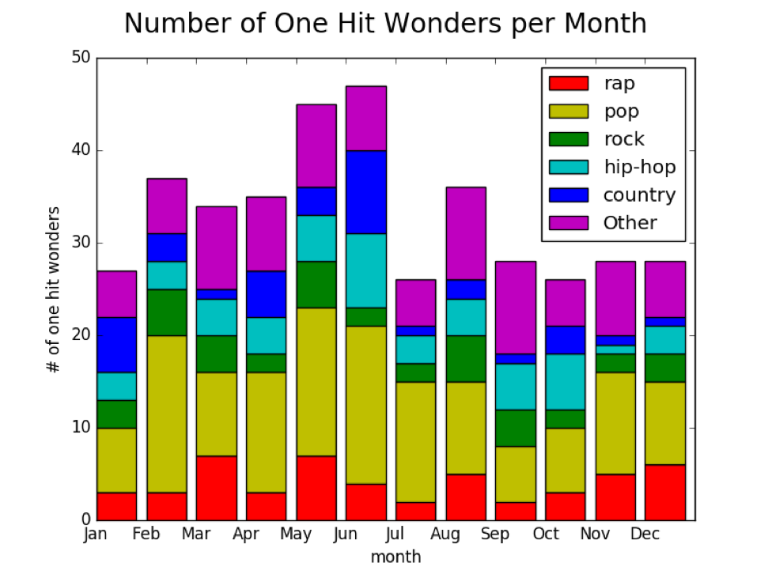
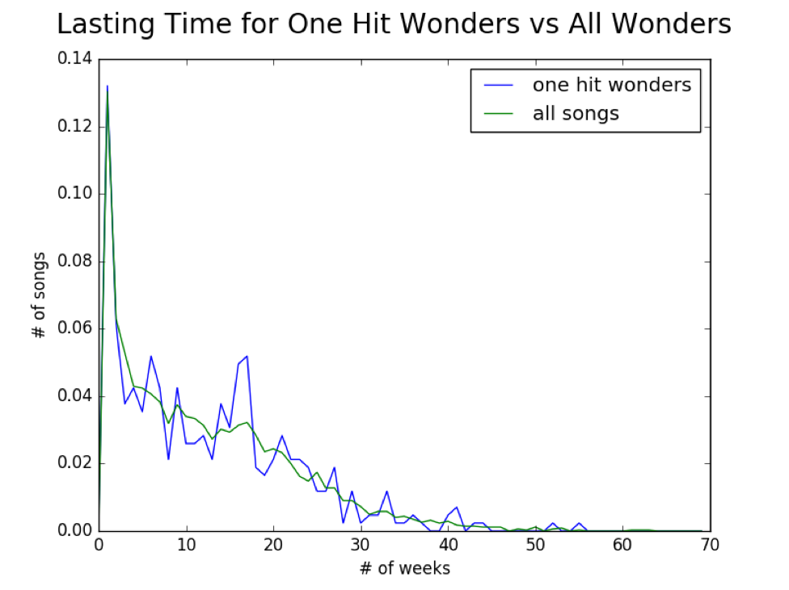

Blog Post 4: 4/12/17
Progress Update:
Since our last blog post we have continued to analyze and explore our data more in depth. We performed a statistical analysis of the chart duration of one hit wonders compared to other top billboard songs to get a sense for any similarities or differences in their movement. We are currently working on another statistical analysis that uses bayes rule to further measure any correlations between one hit wonder genre and top song genre in a given time period. Besides statistics we are working to continue to improve the machine learning that we currently have. By using the machine learning techniques that we learned in class such as feature engineering we were able to boost our prediction accuracy to around 60%. This is not very high, but due to the similar nature of one hit wonders and other top billboard songs it is a strong predictor for the data we are working with. We are also continuing to create more visualizations that graphically represent our data. Using various python libraries we created several bar charts and line plots that highlight various aspects of our data. We are continuing to work on more visualizations including interactive ones in d3.
New Findings:
The following layered bar graph shows the number of one-hit wonders that occur each month sorted by genre. This graph is interesting since it shows the number of one-hit wonders that occur in a month and also the most popular genre. We can see that May and June have the most one-hit wonder releases. This makes sense because those months correspond to the beginning of the summer and play into the idea of the “song of the summer.” From this graph we can also see that the most prominent genre of one-hit wonders in pop followed by other, and hip-hop. Looking at individual months you can see there are some interesting results. For instance in January and June country songs are much more popular in comparison to other genres. There is a lot of information in this graph that better helps us understand the nature of a one hit wonder and will help us moving forward.
Analysis of PDF:
The following graph is a representation of the lasting time of one-hit wonders compared to all songs that are in the top 40. This graph is a probability mass function for the number of weeks that are spent in the top 40. The X axis represents the total number of weeks spent in the top 40, while the Y axis represents the percentage of songs that last that number of weeks. There are a couple of interesting observations that we can derive from this graph. First, it seems that there is a large percentage of songs that last for a very few number of weeks, as evidenced by the large spike at the beginning of the graph. This spike holds for both the one-hit wonders and the regular songs. An additional observation that can be made is that one-hit wonders and all songs follow similar trajectories. There is slightly more variance with the slope of the one-hit wonders, for example, there is a spike of more wonders lasting between roughly 11 and 20 weeks, but for the most part the graphs seem to be relatively similar.
 Return to Home Page